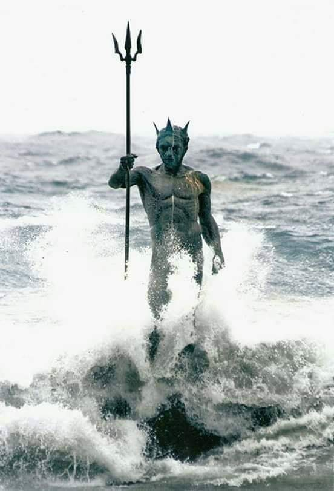

Η ΘΑΛΑΣΣΑ ΚΑΙ ΤΟ ΣΚΑΡΙ
("The Sea and the Schooner")
Click on image to enlarge(img1)
Μικρό σκαρί πειρατικό/ Σ’ αλλαργινό λιμάνι/ Την Θάλασσα εμάλωνε/ Για τα καλά που κάνει:/
«Θάλασσα πικροθάλασσα/ Και ασπροκυματούσα/ Είδες μια νέα λυγερή,/ Ψηλή, μαυροφορούσα/ Της έπνιξες τον άντρα της,/ Τρέλανες τα παιδιά της,/ Και μοναχή την άφησες/ Να κλαίει την ερημιά της»/
«Μικρό σκαρί πειρατικό/ Στ’ αμπάρια σου τί κρύβεις?/ Τί θησαυρούς εκούρσεψες/ Kαι πίσω δεν τους δίδεις?/
Τί καημούς και βάσανα/ Έφερες στους ανθρώπους?/ Και πόσους να εχάλασες/ Ψυχές και χρόνων κόπους?»/
«Θάλασσα είσαι μάγισσα/ Μαγεύεις παληκάρια/ Και παίρνεις τα κορμάκια τους/ Στα κύματά σου τ’ άγρια»/
«Μικρό σκαρί πειρατικό/ Κι εσύ σαν αρμενίζεις/ Τα κύματά μου τ’ αψηφάς/ Κι εμένα φοβερίζεις»/
«Θαρρώ πως μοιάζουμε κι οι δυο/ Σαν να ‘μαστε λέει ένα/ Παίρνουμε δίχως δισταγμό/ Και οίκτο για κανένα»/
copyright©: [mariavarg –Maria Vargiakaki -Μαρία Βαργιακάκη]
Click on image to enlarge(img1)